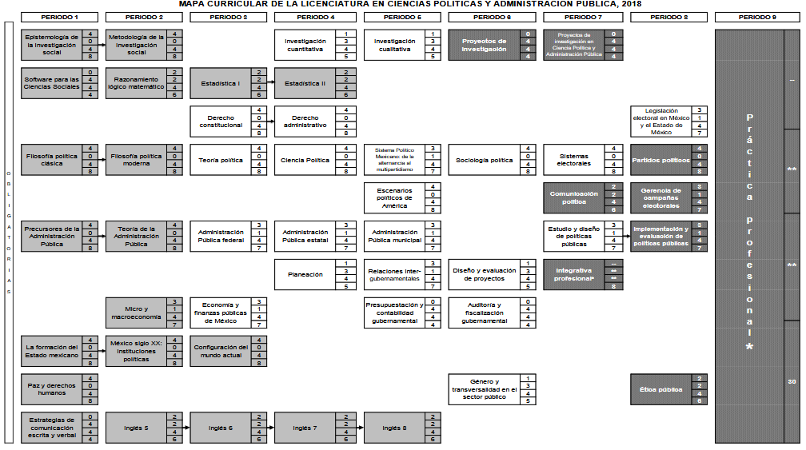

Ciencias Políticas y Administración Pública
Formar profesionales con responsabilidad social y ética, capaces de afrontar desafíos en entornos políticos complejos y multidimensionales.
Objetivos Generales
Formación Integral y Competencias
- Vivir los principios universitarios con respeto y empatía.
- Comprender conflictos globales para decisiones acertadas.
- Ejercer el diálogo y el respeto como principios de apertura.
- Uso eficiente de las TICs en la sociedad del conocimiento.
- Desarrollar hábitos de trabajo y disciplina organizacional.
- Cuidar la salud y ejercer responsablemente el tiempo libre.
Detalles del Programa
Duración y Valor
Periodos:
9 Periodos (4.5 años)
Total Créditos:
404 Créditos
(362 obligatorios y 42 optativos)
Modalidad Educativa
Modalidad Mixta
Unidades de aprendizaje en modalidad escolarizada y no escolarizada.
Actualización:
2018
Otros espacios académicos donde se imparte
- Facultad de Ciencias Políticas y Sociales
- Centro Universitario UAEMéx Texcoco
- Centro Universitario UAEMéx Amecameca
- Centro Universitario UAEMéx Zumpango
Plan de Estudios
